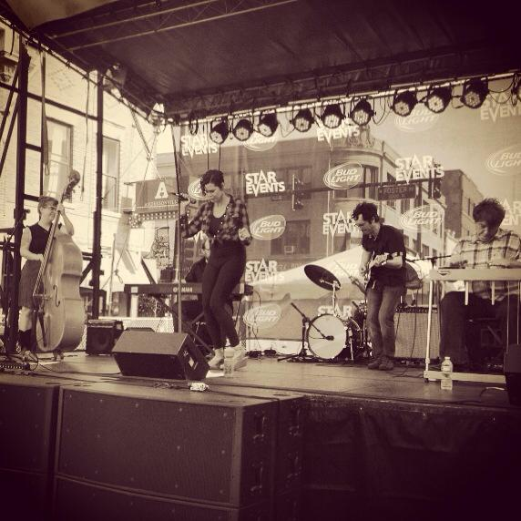

Image credit: Jacob Hand Photography
"The Weepin’ Willows recreate Cline’s heartache-filled tunes masterfully, placating long-time Patsy fans and turning Patsy novices into newfound fans immediately."
Please email Natalie at nataliejose@gmail.com for booking inquiries.
X
Image credit: Jacob Hand Photography
"The Weepin’ Willows recreate Cline’s heartache-filled tunes masterfully, placating long-time Patsy fans and turning Patsy novices into newfound fans immediately."
Find us on Facebook or Twitter for the latest info on our shows!
Hear an interview with the band and more songs recorded live on WBEZ's Morning Shift here.
Pheasant Run Resort | St. Charles, IL | 8/2/2014
WBEZ Studio | Chicago, IL | 3/5/2013
Hear the whole interview and more songs recorded live on WBEZ's Morning Shift here.
Design Harvest Fest | Chicago, IL | 9/20/12

Image credit: Jacob Hand Photography
The Weepin' Willows are Chicago's own Patsy Cline cover band.
Led by singer Natalie Jose, the band formed in late 2009 and has been entertaining audiences with Patsy's extensive and varied songbook ever since.
With instrumentation featuring lead guitar, pedal steel, piano, drums, and upright bass, we perform it all — from familiar ballads such as "Crazy" and "She's Got You" to the upbeat honky tonk and rockabilly stomps of "Seven Lonely Days" and "Stupid Cupid."
We've played a variety of venues throughout the region over the years - from corner bars to casinos, street festivals to wedding receptions to retirement communities. Contact Natalie at nataliejose@gmail.com for booking inquiries.